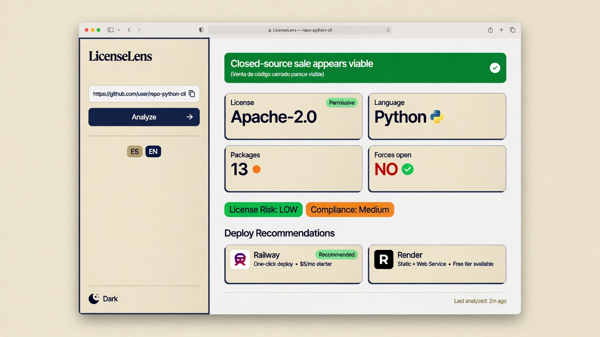

Repo + dependencias
npm, PyPI, Cargo, Go, RubyGems, Composer, Maven/Gradle (best-effort) y licencia del repo vía API de GitHub.
Open source · gratis · se ejecuta en tu máquina
Analiza la licencia del repositorio GitHub y de sus dependencias. Señal heurística de riesgo GPL/AGPL, export Markdown/SBOM y UI local opcional. No es asesoramiento jurídico.
Esta página es solo documentación estática (GitHub Pages). La herramienta corre en tu PC — sin SaaS y sin enviar tu código a terceros.

npm, PyPI, Cargo, Go, RubyGems, Composer, Maven/Gradle (best-effort) y licencia del repo vía API de GitHub.
Clasifica permisivas, copyleft débil/fuerte y señales AGPL/SSPL (SaaS). Score 0–100 y veredicto con disclaimers.
Comando gls, UI NiceGUI opcional, export Markdown, CycloneDX y SPDX. ES/EN y tema claro/oscuro.
Python 3.11+. pipx aísla la herramienta del resto de tu entorno.
pipx install github-license-scanner
gls scan psf/requestspipx install "github-license-scanner[ui]"
gls uiLuego abre http://127.0.0.1:8080 en tu navegador (solo en tu máquina).
python -m venv .venv
# Windows: .venv\Scripts\activate
source .venv/bin/activate
pip install "github-license-scanner[ui]"
gls scan owner/repo
gls uiPaquete en PyPI: github-license-scanner
Ideal si quieres contribuir o ejecutar la versión de desarrollo.
git clone https://github.com/NezbiT/github-license-scanner.git
cd github-license-scanner
python -m venv .venv
# Windows: .venv\Scripts\activate
source .venv/bin/activate
pip install -e ".[ui]"
gls scan psf/requests
gls ui# Escaneo
gls scan https://github.com/psf/requests
gls scan owner/repo
# Lote (un URL por línea)
gls batch urls.txt
# Export Markdown + SBOM
gls scan psf/requests --markdown report.md --sbom bom.cdx.json
gls scan psf/requests --sbom bom.spdx.json --sbom-format spdx
# Historial local
gls history
# UI
gls uiOpcional: define GITHUB_TOKEN para más cuota de la API de GitHub y repos privados autorizados.
Esta herramienta ofrece heurísticas automatizadas para desarrolladores. No es asesoramiento jurídico, ni una opinión de compatibilidad de licencias, ni una garantía de no infracción. Dual-licensing, linking, SaaS (AGPL/SSPL) y contratos pueden cambiar las obligaciones. Consulta a un abogado cualificado antes de distribuir software cerrado comercialmente.